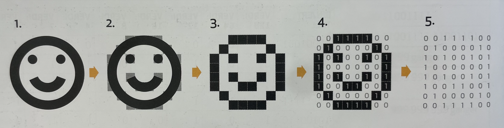
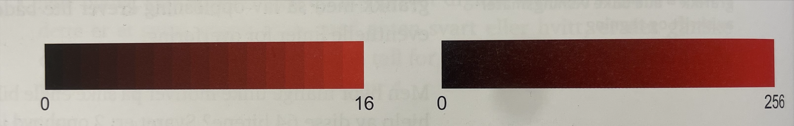

Bildepunkter og piksler
Bilder består av bildepunkter, også kalt piksler. For at et bilde skal være tydelig og forståelig, deler vi bildet inn i mange piksler. Jo flere punkter/piksler du deler et bilde inn i, desto høyere blir oppløsningen og dermed også kvaliteten. Nedenfor ser du en illustrasjon av et smilefjes som trinnvis brytes ned:

Smilefjeset har to nivåer: svart og hvitt. I en datamaskin blir smilefjeset så digitalisert ved at et kamera eller en skanner leser av og deler det inn i bildepunkter, se figur 2. I figur 4 settes det på verdier for de ulike fargene, 0 for hvit og 1 for svart. Dette er relativt enkle tall i forhold til hva det er på bildene vi vanligvis bruker på nettsidene våres. Hvert bildepunkt får altså et eget tall/en verdi. Når vi tar bort smilefjeset, se figur 5, står vi igjen med kun bildepunktene og ut fra denne informasjonen kan datamaskinen framstille en figur. Det settes også opp en tallrekke: 0, 0, 1, 1, 1, 1, 0, 0, 0, 1, 0, 0, 0, 0, 1, 0, 1, 0, 1, 0 osv.
Farger - RGB og CMYK
Vi bruker som oftest farger på bildepunktene våres. Datamaskinen trenger da flere ulike tall eller verdier for å beskrive hvert punkt. De to vanligste måtene å beskrive farger på er ved bruk av RGB-verdier eller CMYK-verdier.
| Bruk | Farger | |
|---|---|---|
| RGB | Grafikk på skjerm | Rød, grønn, blå |
| CMYK | Trykk på papir | Cyan, magenta, yellow, black |

Bildet ovenfor viser overgangen fra rødt til svart. Om vi velger å kun bruke lav oppløsning, tar vi oss kun råd til å bruke f.eks. 16 forskjellige nivåer og får derfor en grov oppløsning. Øynene våre er såpass gode at vi trenger flere nivåer for å kunne se jevne overganger. En vanlig oppdeling er derfor 256 nivåer.